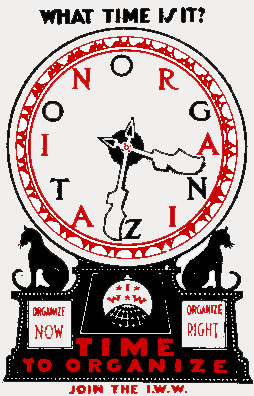

US Labor Law at 80: the Enduring Relevance of Class Struggle Unionism
Submitted on Wed, 09/30/2015 - 9:04pm
By Immanuel Ness - CounterPunch, September 22, 2015
Disclaimer: The views expressed here are not the official position of the IWW and do not necessarily represent the views of anyone but the author’s.
By embracing collective bargaining through the National Labor Relations Act (NLRA) of 1935, or Wagner Act, organized labor deprived workers of their capacity to contest private and state power. This compromise closed out any possibility of building a mass-based labor movement for decades. Rather than advancing the interests of workers, the NLRA circumscribed workers’ aspirations for democratic syndicalist and autonomist unions.
IWW: Alternative to Contract Unionism
In examining the long-term failure of organized labor, we must first note the alternative, organic, autonomous workers’ movement embodied in particular by unions affiliated with the Industrial Workers of the World (IWW) in the early 20th century. From its inception in 1905 until the 1920’s, the IWW represented a significant alternative to contract unionism. The IWW stood for the solidarity of all workers and it was fiercely opposed for that reason — by capital, by reformists such as Daniel DeLeon of the Socialist Labor Party and by the American Federation of Labor (AFL).[i] The IWW engaged in a genuine form of democracy and a mass industrial organizing model ultimately adopted by the AFL and the Congress of Industrial Organization (CIO), which both utilized for very different purposes.[ii]
The IWW employed sabotage, direct action and strikes through the equivalent of workers’ councils in both the community and at the point of production, while disavowing the legitimacy of the state and recognizing that any agreement with business must be temporary. The Wobblies vigorously negotiated with employers but were never deluded that agreements would bring labor peace.
That the solidarity of all workers was not just talk for the IWW is evidenced by their organization of Blacks, immigrant workers from Mexico and Southeast Asia, and women in, for example, the Bread and Roses Strike. Historian Peter Cole has richly demonstrated that the IWW embraced multiracial unionism, perhaps most notably in Philadelphia’s Maritime Workers Local 8, where Black workers maintained a majority.iii
The IWW achieved major gains for U.S. workers into the 1930s while (and because) it emphasized solidarity and workers’ control. When AFL and CIO unions expanded dramatically as a result of upheaval that began in the early 1930’s, they, by contrast, mostly failed to stimulate enthusiasm among workers. Riding the massive wave of sit-down strikes to positions of power, leaders of insurgent unions contributed greatly to sublimating the continuation of such militancy by throwing their support behind modest and incomplete New Deal reforms that ultimately weakened the capacity of workers to confront capital directly. In the area of labor relations, the NLRA was the fulcrum.
Many workers who participated in the sit-down strikes in mass production industries considered unionization synonymous with control over the enterprise, as was recognized immediately by capital. Given the breadth and ongoing militancy of the labor upheaval, the most astute corporate leaders soon expressed willingness to yield select rights provided that employer absolutism in the workplace was maintained. The NLRA proved to be the mechanism for doing so and responsible labor leaders proved willing junior partners in quelling worker militancy. For approximately a year after the wave of sit-down strikes, many workers were surprised to learn that their unions, as sanctioned by the NLRA, set up a framework that restricted their autonomy.
In his account of the Flint sit-down strikes, Sidney Fine wrote of how UAW members “were reluctant to accept the customary discipline exercised by management” and “ran wild in many plants for months.” Union committeemen aggressively pressed the grievances of union members upon oftentimes unyielding foremen, and as a UAW member later conceded, “Every time a dispute came up the fellows would have a tendency to sit down and just stop working.”iv
The Communist Party
Like the IWW, the Communist Party (CP) in the early 1930’s opposed collective bargaining that limited workers’ direct action and strikes. The CP, along with other left parties, also opposed the New Deal, including, until 1936, the Wagner Act. Thereafter, the CP, on orders from the Communist International, embraced compromise and labor peace just as CIO leaders did. Just when working class militancy was at its apogee, the CP failed to mobilize this upheaval in an independent direction and instead favored a “united front from above” that embraced the Democratic Party, opposition to fascism and the New Deal.
While Communists were in part motivated by defending the Soviet Union against rising fascism, left union leaders were absorbed with maintaining their power through suppressing workers’ control in local unions and communities. Its alliance with such forces eroded the CP’s independent position and set the stage for the bipartisan anticommunist witch hunts a decade later.
The CP had in significant ways advocated for Black workers, such as in a 1936 strike of an Alabama local of the Mine Mill Workers led by black Communists who gained white support and successfully campaigned for the reinstatement of 160 fired workers despite company efforts to divide the workers.v The party’s support for the NLRA and compromise with the New Deal and the CIO changed that dynamic, as became clear by the late 1940’s when an empowered right-wing CIO leadership pursued membership growth at any expense, even though this was often accompanied by the emergence and expansion of local unions advocating racial segregation. Even the IWW in the early 20th century, despite its best efforts, could not control provincialism and racism in some locals; after 1950, the more powerful CIO, like the AFL, for the most part ignored the marginalization of African Americans on the local level.vi
Formalizing Contract Unionism and Traditional Unionism
The NLRA also rendered most forms of alternative rank and file unionism inconsequential. While European leftist workers in the early 20th century engaged in multiple alternative forms of representation, including council communism, anarcho-syndicalism, and autonomism, in the United States, almost without exception, workers seeking unionization had one rite of passage: employer recognition. Any possibility of organizing workers’ power and solidarity differently was foreclosed. In the absence of a political counterforce to the two capitalist parties, contract unionism heralded the ideological capitulation of the AFL and CIO.
The contention by some that social unionism as embodied by the CIO would lead to a more militant labor movement, either in 1938 or at any time since, was and remains a pretense. No viable new forms of organization could emerge as a major force as long as the NLRA system was the law. Collective bargaining was the mechanism for distributing private benefits to white industrial workers, while the New Deal programs provided social benefits to some of the unemployed, elderly, and poor. However, although conditions improved for a segment of the working class, African Americans and ethnic minorities were left out of this agreement.
The social-movement union concept was taken up in 1995 when John Sweeney led a palace coup that ousted AFL-CIO president Lane Kirkland. While Sweeney pledged to rebuild labor, most unions opted for opportunistic efforts to leverage employers through corporate campaigns and by training astute, altruistic college graduates as labor organizers[iii] who allegedly knew more than the workers and often neglected workers themselves in corporate campaigns. Many other unions grew by mergers and raiding, as is well documented in the work of Steve Early, while also engaging in trusteeing insurgent locals. Instead of building a rank and-file movement, union leaders sought to consolidate power.[iv]
The No-Strike Pledge During World War II
The no-strike pledge of World War II further solidified the AFL and CIO’s commitment to labor peace. U.S. workers have had a proclivity to engage in direct action through strikes and work stoppages and, as Nelson Lichtenstein shows, national and local union leaders had to contend with disgruntled members who opposed incentive schemes and the prohibition of strikes during the war.[v] Thousands of workers in various industries went on strike without union authorization in the war years — so many, in fact, that in 1944, “more strikes took place than in any previous year in American history.”[vi] Paradoxically, while the no-strike pledge may initially have prevented workers from striking, it ended up triggering a new strike wave that challenged the authority of the War Labor Board and labor union leaders.
Under the union security provision of the War Labor Board, workers paid dues to their unions without getting effective bargaining and grievance rights in exchange. More importantly, the unions were charged with enforcing the no-strike pledge and punished members who engaged in concerted activities of any kind. In effect, unions policed their own members in exchange for a dramatic increase in dues-payers, as union organization grew to nearly 70 percent of manufacturing industries by war’s end.[vii]
The War Labor Board was delegated to decide and enforce labor and management agreements, largely keeping wages in check. With the passage of the Economic Stabilization Act of October 2, 1942, at President Franklin Roosevelt’s urging, wages and prices were controlled, preventing workers from exercising their NLRA rights to bargain over wages and working conditions. Apart from rare instances when it was deemed that workers were underpaid relative to others in their industries, labor unions were charged with preventing wage growth. At war’s end mass strikes erupted throughout the manufacturing industries, leading to wage increases for workers whose wages had been held in check through the complicity of labor with employers and the government.
One result of this rapid union bureaucratization was that worker-activists and union organizers instrumental in building the insurgent unions of the CIO left the movement, disillusioned by centralization and the erosion of rank and file power. As local control waned, national unions became beholden to management and government cooperation. Bureaucratization within organized labor not only constrained worker self-activity and spurred disillusionment, it set the stage for the removal of radicals from its ranks and jettisoned support for genuine workers movements internationally. The no-strike pledge soon became a permanent fixture, as most unions voluntarily signed away the right to strike in contract after contract. In recent years, unions have gone so far as to abandon the strike even when the employer violates the contract. Though the strike remains among the most potent means of building workers power, unions are unwilling to use it. Workers who express dissent through wildcat strikes thus confront force and sanctions by capital, the state and their own unions.[viii]
The formalized system of labor relations preserved the authority of the capitalist state even as radical workers were in motion. Thus, organized labor during World War 2 was constrained by its obligation to uphold the sanctity of collective bargaining. With the onset of the Cold War, unions in the AFL and CIO then went on to support U.S. foreign policy in opposition to any form of socialism or labor militancy, thereby advancing the interests of U.S. business at home and imperialism abroad.
In the 1930s, at a crucial historical moment of revolutionary worker upsurge, direct action tactics by workers were viewed by labor leaders as an impediment to cooperative political relations with the Democratic party and union collaboration with management. Generally, if the socialist left accepts the terms as embodied in the NLRA, then labor tactics are transformed into a sideshow that does not take into account the objective militancy of the working class. The New Deal set in motion a labor regime deeply rooted in compromise and collaboration while capital engaged in unremitting warfare. Through sanctioning of this maneuver, organized labor made it clear that it had no interest in building a class-based movement of the working class.
The failure of radical ideology to take hold in the labor movement in the 1930’s was not because of an uninterested working class, as fifteen years of rank and file militancy attests. The labor movement was constrained by its own legislation, which qualitatively transformed the expression of working class power. As evidenced by the wave of unauthorized strikes during World War II, workers were no less class conscious and militant than before, but were drawn constantly into the black hole of collective bargaining. Left labor activists and leaders were unable to assert an organizational force for workers and the labor movement in the Democratic Party and, in the absence of a labor party, cannot achieve a social compact that institutionalizes its interests.
Toward a Militant Rank-and-File Future
In the U.S., the capitalist state conflates civil liberties with market choice. At the center of the liberal democratic system, workers have fiercely resisted exploitation through the development of worker-based organizations rooted in the ideal of paving the road to a classless and democratic society. All those seeking greater labor militancy must recognize that traditional unions are unable to escape the trap set in the 1930s through fidelity to the collective bargaining agreement.
While the relevancy of IWW tactics to the conditions of the early twenty-first century are indisputable—sabotage, mass industrial action, general strikes, and eventual workers’ control over production—radical workers ensnared in traditional unions will fail at this effort as they defy the reality of the legal institutional framework established through the NLRA. With certainty, the norms of the labor regime will be defied, as advocated by the IWW, but these defiant actions will only emerge outside of the traditional trade unions that officially sanctioned and benefited from the old system that is now becoming all but extinct.
Notes.
[i] Staughton Lynd, “We Are All Leaders”: The Alternative Unionism of the Early 1930s (Urbana: University of Illinois Press, 1996); Jennifer Luff, Commonsense Anticommunism: Labor and Civil Liberties between the World Wars (Chapel Hill: University of North Carolina Press, 2012); and Bryan J. Palmer, James P. Cannon and the Origins of the American Revolutionary Left, 1890-1928 (Urbana: University of Illinois Press, 2006), 55-57.
[ii] Melvyn Dubofsky, We Shall Be All: A History of the Industrial Workers of the World (Chicago: Quadrangle Books, 1969); John H.M. Laslett and Seymour M. Lipset, eds., Failure of a Dream? Essays in the History of American Socialism (Berkeley: University of California Press, 1984.
iii Peter Cole, Wobblies on the Waterfront: Interracial Unionism in Progressive-Era Philadelphia (Chicago: University of Illinois Press, 2007).
[iii] Kate Bronfenbrenner et al., Organizing to Win: New Research on Union Strategies (Ithaca: Cornell University Press, 1998).
[iv] Steve Early, The Civil Wars in U.S. Labor: Birth of a New Workers Movement or Death Throes of the Old (Chicago: Haymarket Books, 2011).
ix Jeremy Brecher, Strike! (Boston: South End Press, 1997). According to Brecher, under the War Labor Board’s union security provision and the self-imposed no-strike pledge, the authority of labor unions over their members increased appreciably as workers were forced to remain within their union and required to pay dues. As a consequence, unions acquiesced to low wages and repressed rank-and-file autonomy, dissent, and activism. The no-strike pledge thereby expanded the power and political influence of union leaders as the intermediaries between labor, industry, and government at the expense of membership. Workers had virtually no recourse to improving poor wages, poor conditions, or employer intrusion on their rights.
[vii] Brecher, Strike!, 240.
xi James R. Barrett, “The History of American Communism and Our Understanding of Stalinism,” American Communist History 2, vol. 2 (2003):175-182. While Communist CIO leaders were complicit in the passage of the NLRA, this critique is not intended to discredit their significant role in community organizing and fighting racism. In doing so, as James Barrett asserts, we run the risk of equating the lives and activities of thousands of militants with national and international Communist bureaucracies, and miss entirely the experience of Communist activism, the vital role of Communists in local labor and community movements, and the meaning of Communism in the broader context of working-class everyday life (178).[viii]